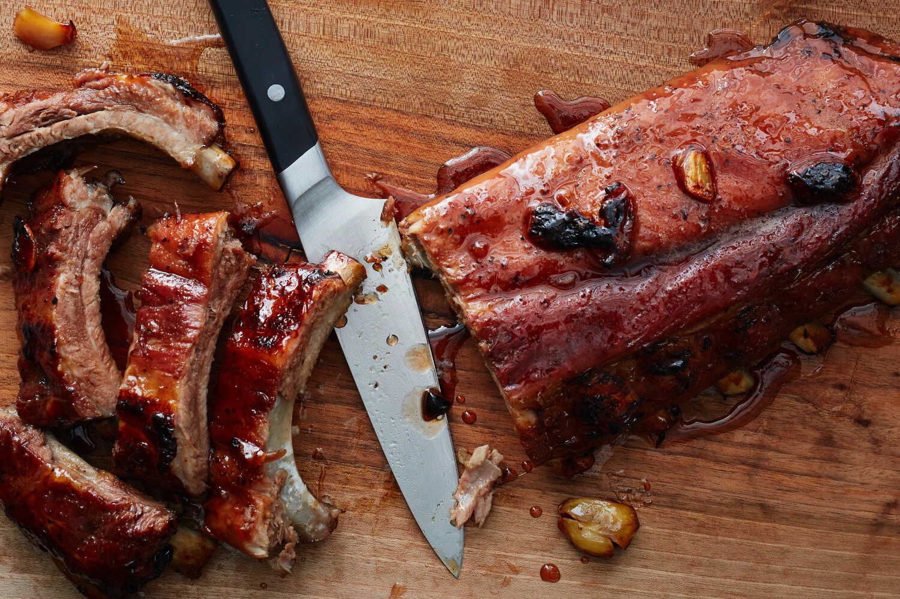

For You
Trending
COVID-19
News
Sports
Entertainment
Trending in Sports
R.J. Barrett
5,218 Tweets
Trending in Music
Lil Yachty
55.5k Tweets

The New York Times
. Yesterday
The Juicy Secret to Stellar Baby Back Ribs
Sports . LIVE
New York Knicks updates as they approach NBA trade deadline
The Athletic
. Yesterday
Nets’ Kyrie Irving requests trade as Lakers, Suns, Mavericks, Clippers emerge as potential suitors: Sources
Trending in United States
Banana Bread
1,259 Tweets